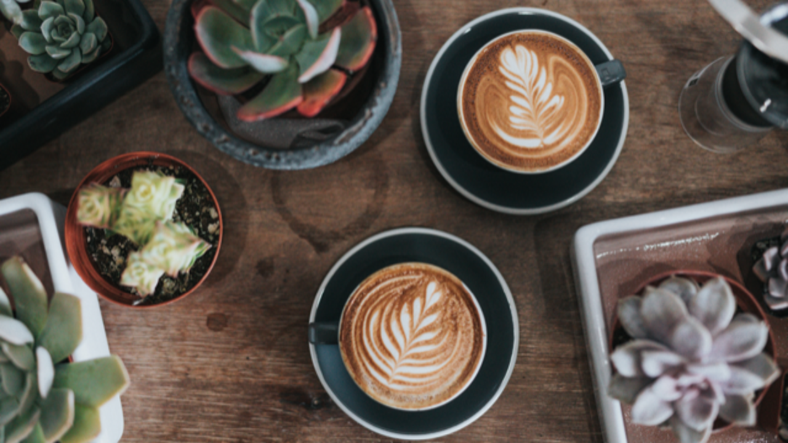
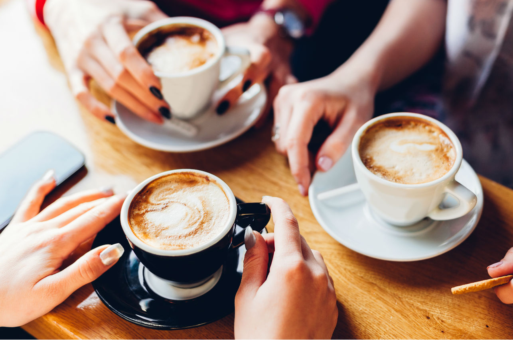

nuestro cafe
En CandleCafe reunimos los mejores cafés de las mejores fincas y regiones de nuestro pais; cada una con sus características muy particulares con las que, al combinarlas tenemos una gama enorme de aromas, sabores, cuerpos y texturas.

El olor al café, a unos granos recién tostados, es la mejor bienvenida que cada día planificamos para brindarles cuando abrimos las puertas de nuestras tiendas. Pero eso es sólo el comienzo.

Cada café que ofrecemos exige un perfil de tostado único para crear una taza con el máximo aroma, acidez, cuerpo y sabor. Al trabajar en un delicado balance en calor, tiempo y arte, nuestros maestros en el tostado hacen resaltar estas únicas características de cada grano de café.